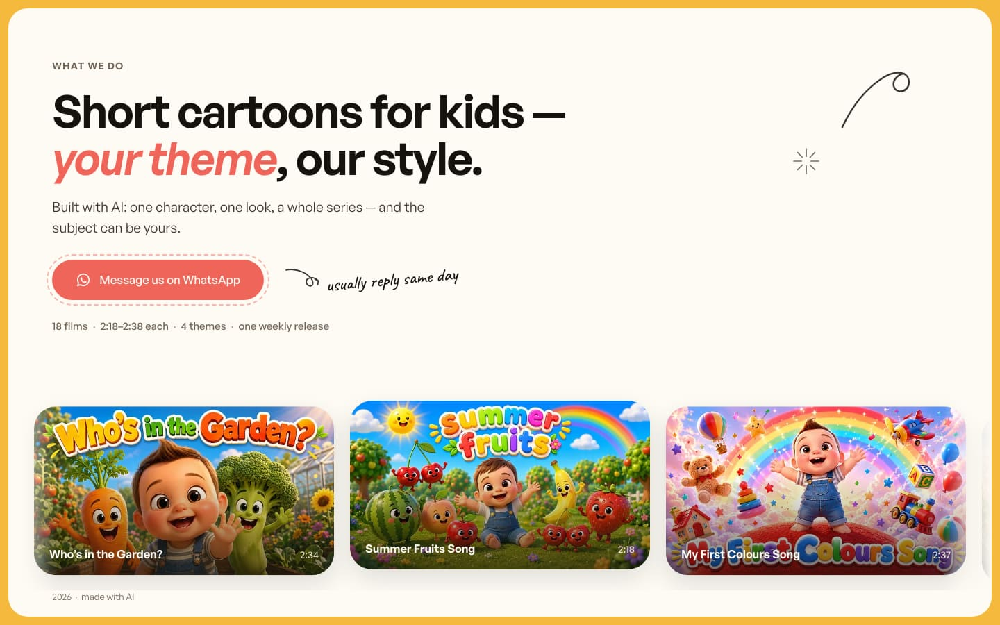
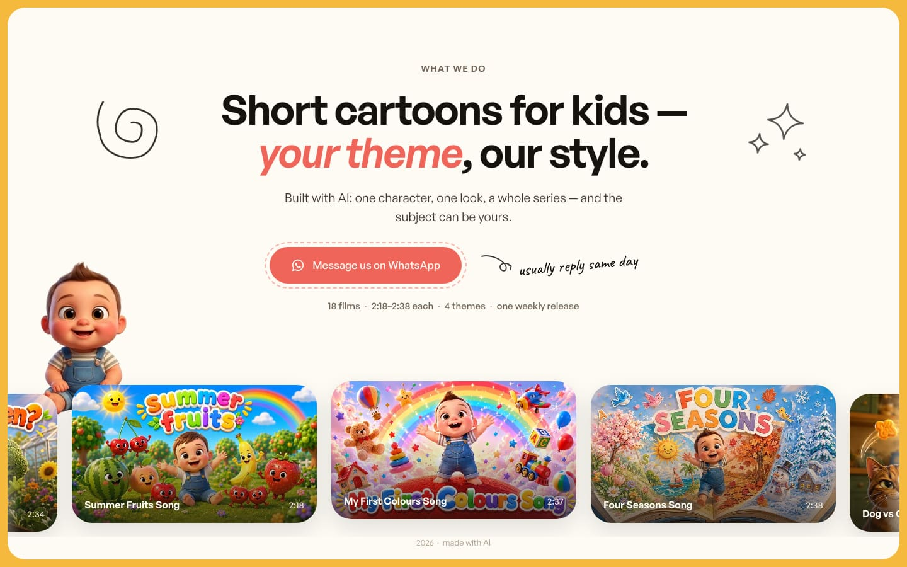
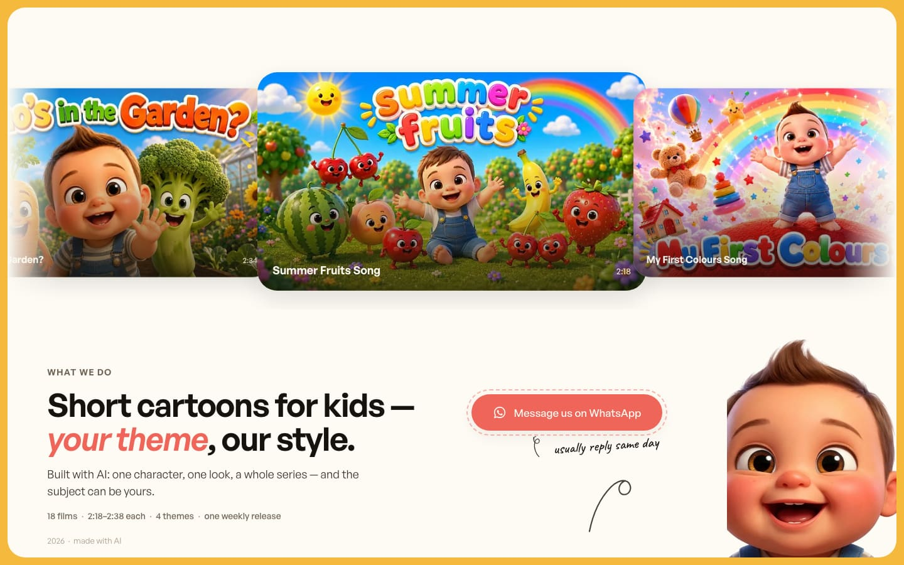

Один и тот же контент, одни и те же обложки, одна и та же кнопка. Отличается только композиция — то, в каком порядке человек встречает работу, заголовок и кнопку.
script.js выбранного варианта:
WHATSAPP_URL (пока пусто, кнопка никуда не ведёт) и массив VIDEOS
(все пять карточек пока ведут на канал, а не на конкретные ролики).

Текст прижат влево, лента обложек течёт через весь низ экрана и уходит за оба края. Сразу видно, что работ много и они не кончаются.
Открыть
Всё по центру, закорючки по бокам заголовка, лента дугой внизу, маскот выглядывает из-за кадра. Самая спокойная раскладка — прямое прочтение дизайн-системы.
Открыть
Галерея занимает верх экрана целиком, текст и кнопка — под ней. Покупатель видит уровень до того, как прочтёт хоть слово.
Открыть